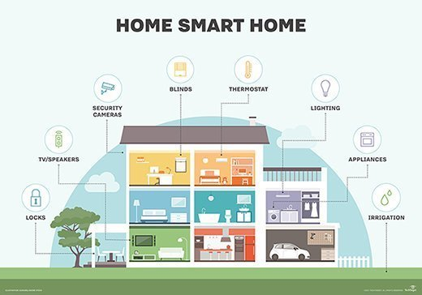

The Internet of Things (IoT) encompasses the connectivity of diverse devices beyond conventional computers and smartphones, enabling them to exchange data over the internet. These devices span from everyday items like thermostats and refrigerators to industrial machinery like tractors and airplanes. IoT's objective is to facilitate data sharing among devices, fostering collaboration to enhance efficiency, diminish human intervention, and bolster safety measures. Practical applications of IoT include smart homes, connected vehicles, and wearable fitness tracking technology.
Sensors: These devices gather data on various environmental and operational factors, such as temperature, humidity, light levels, soil moisture, and plant growth.
Gateway: This serves as the bridge between sensors and the wider IoT infrastructure, either as a standalone device or integrated into a sensor.
Network: Facilitates communication among sensors, the gateway, and other system devices, employing wired or wireless connections like Wi-Fi or cellular networks.
Cloud Platform: Enables data storage, processing, and analysis collected by sensors, and may offer a user interface for data management.
Actuators: These devices execute automated actions based on sensor data, such as regulating greenhouse temperature or humidity.
Controllers: Allow remote monitoring and control, often accessible via smartphones or computers.
1- Environmental Conditions: Greenhouses require a controlled environment for optimal plant growth. External factors like weather fluctuations, temperature variations, and humidity changes can still influence the internal greenhouse environment, posing challenges for consistent conditions.
2- Limited Space: Greenhouses often have confined areas, limiting the capacity to cultivate a diverse range of crops or meet high demand.
3- Cost: Establishing and maintaining greenhouse operations can be expensive, especially when incorporating advanced technologies like IoT infrastructure.
4- Disease Control: Managing and preventing pests and diseases is crucial for maintaining the health and productivity of greenhouse crops.
5- Water and Nutrient Management: Properly balancing water and nutrient levels is essential for plant growth. However, achieving this balance without over- or under-watering can be challenging.
Energy Efficiency: Greenhouses rely on artificial lighting and heating to sustain an optimal growing environment. This reliance can be energy-intensive and expensive, impacting overall operational costs.
A smart house system represents a dwelling equipped with internet-connected devices facilitating remote supervision and management of various utilities like lighting, temperature regulation, security, and home entertainment. These systems are operable through mobile apps or web interfaces and commonly integrate voice control via virtual assistants like Amazon's Alexa or Google's Assistant. While some systems are tailored for specific smart devices, others offer compatibility across diverse manufacturers' products.
Within a smart home infrastructure, the "cloud" denotes a network of internet-connected servers employed for storing, processing, and overseeing data. Instead of local storage on devices like computers or smartphones, data generated by smart home devices, encompassing sensor readings, energy consumption details, and control directives, is stored on the cloud. This stored information is remotely accessible and analyzable via mobile apps or web interfaces. For instance, a smart thermostat tracks home temperature and humidity, storing this data on the cloud for analysis via cloud-based services to identify usage patterns and enhance energy efficiency.
Employing the cloud in smart home setups offers enhanced adaptability and scalability. It streamlines the addition of new devices and functionalities without necessitating fresh installations of hardware or software on the local network.
1- Smart Thermostats: These devices regulate indoor temperature and humidity while being programmable to optimize energy consumption.
2- Smart Lighting: These lights are controllable and schedulable via mobile apps or voice commands. Some can alter colors or simulate a sunset, aiding relaxation in the evenings.
3- Smart Security: This includes sensors for doors and windows, security cameras, and motion detectors, monitored and managed through mobile apps.
4- Smart Appliances: Devices like refrigerators, washing machines, and ovens are controllable and monitored through mobile apps or voice commands.
5- Smart Speakers: Devices like Amazon Echo or Google Home serve as voice-controlled hubs, managing other smart devices and providing information or entertainment like music playback or answering queries.
Zigbee represents a wireless communication standard utilized for connecting diverse devices, notably within smart home setups. Functioning within the 2.4 GHz frequency band, Zigbee is crafted to be cost-effective and energy-efficient, catering to devices that demand prolonged battery life.
Built upon the IEEE 802.15.4 standard, Zigbee employs a mesh networking structure. This architecture enables devices to directly communicate or relay messages through intermediary devices, expanding the network's coverage. This characteristic makes Zigbee particularly well-suited for smart home systems, allowing devices to interact despite not being within direct proximity to a central hub or router.
In the realm of smart homes, Zigbee finds application in an array of devices, ranging from smart thermostats and lighting to security systems. Moreover, its usage extends beyond domestic settings, being employed in industrial automation and other scenarios necessitating economical, low-power wireless communication solutions.
Smart cities are urban areas that leverage technology, data, and innovation to improve the quality of life for their residents, enhance sustainability, and optimize infrastructure and services. These cities integrate various technological advancements to manage resources efficiently, promote economic growth, and create a more livable environment.
1- Technology Integration: Smart cities use advanced technologies like the Internet of Things (IoT), sensors, and connectivity to gather real-time data from various sources. This data is analyzed to make informed decisions and improve city operations.
2- Infrastructure: Implementing smart infrastructure involves integrating technologies into buildings, transportation, energy systems, and utilities. For instance, smart grids help optimize energy distribution, while intelligent transportation systems manage traffic flow.
3- Sustainability: Smart cities focus on sustainability by reducing energy consumption, promoting renewable energy sources, managing waste efficiently, and enhancing overall environmental practices to create eco-friendly urban spaces.
4- Transportation: They prioritize efficient public transportation systems, promote alternatives like cycling and walking, and use data-driven approaches to manage traffic congestion and optimize routes for commuters.
5- Citizen Engagement: Engaging citizens is crucial in smart cities. They use digital platforms, mobile apps, and community participation to gather feedback, provide services, and involve residents in decision-making processes.
6- Data and Analytics: Smart cities rely on data analytics to gain insights into various aspects such as energy usage, traffic patterns, waste management, and more. This data-driven approach helps in making informed decisions and improving city services.
created with
HTML Website Builder .